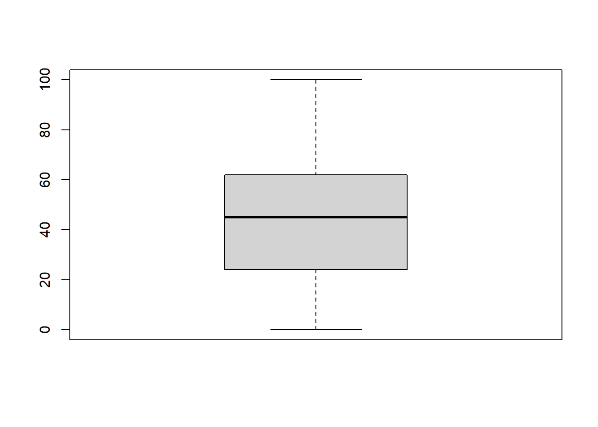
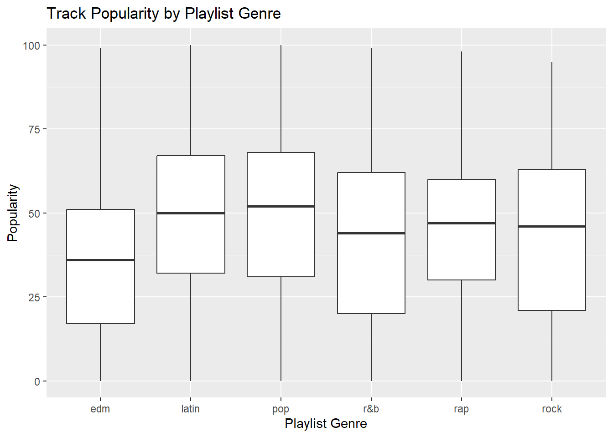
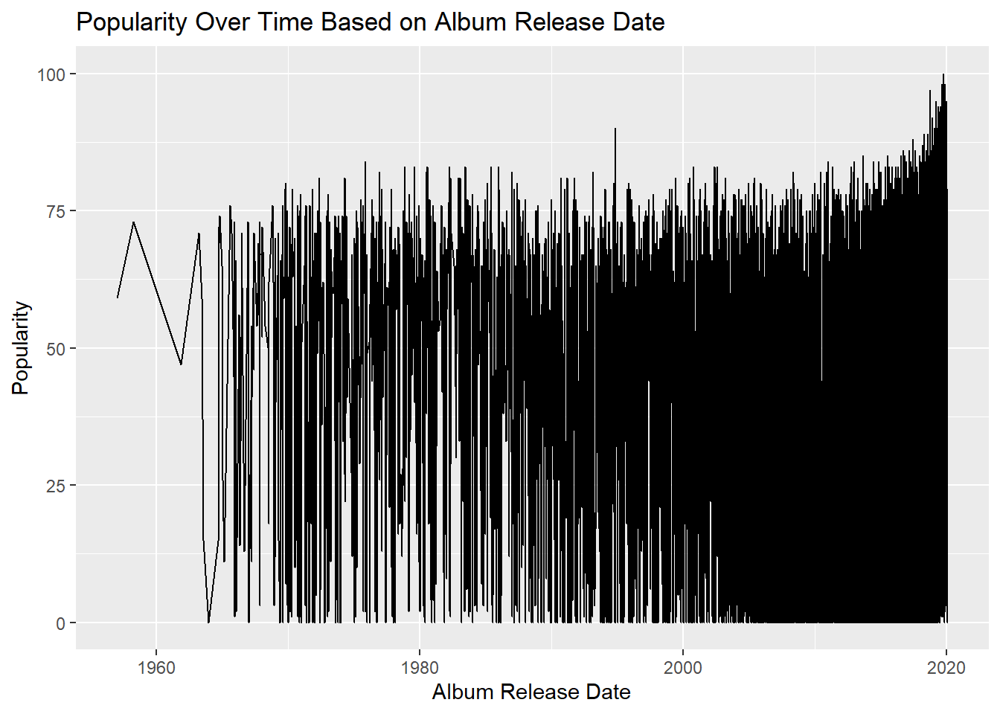

Chapter 14 Visualizations
14.1 Introduction
14.1.1 The Imperative of Visual Representations in Research
In the contemporary landscape of academic and applied research, visual representations have risen to prominence as indispensable components of scholarly communication. Visual aids such as tables, graphs, and charts play a critical role in the dissemination of research findings, serving as a potent mechanism for encapsulating complex datasets, theories, and relationships in an accessible manner (Tufte, 2001). In fact, well-designed visualizations can make a marked difference in how research is consumed, interpreted, and critiqued.
14.1.1.1 Facilitating Cognitive Processing
Humans are inherently visual creatures. A considerable proportion of the brain is devoted to visual processing, making visual cues one of the most effective means of information transmission (Ware, 2012). When integrated into research papers, visualizations capitalize on this cognitive predisposition, facilitating quicker comprehension and more robust retention of the material presented. This is particularly pertinent in fields like Communication and Media Research Methods, where data are often multifaceted and conclusions nuanced.
14.1.1.2 Enhancing Analytical Rigor
Visual representations also contribute to the analytical rigor of research endeavors. For instance, a well-plotted graph can illuminate trends and anomalies that may remain obfuscated in raw, numerical data (Cairo, 2016). As such, visualizations can serve as both a diagnostic tool for the researcher and an evidentiary asset for the reader, substantiating claims and underpinning arguments.
14.1.2 Complementing Textual Explanations for a Holistic Understanding
While the textual component of a research paper provides the requisite detail and contextual underpinning, it may fall short in offering the immediacy and clarity that visual aids can deliver.
14.1.2.1 Symbiosis of Text and Visuals
A synergetic relationship between text and visuals often proves to be the most effective approach for conveying a multi-layered research narrative. Textual explanations can delve into the intricacies, limitations, and theoretical frameworks that underlie the research, while accompanying visual aids provide an immediate, intuitive grasp of key points, trends, and implications (Kelleher & Wagener, 2011).
14.1.2.2 Accessibility and Engagement
Furthermore, well-crafted visualizations make scholarly work more accessible to a broader audience, including those who may lack specialized training in the subject area. They can break down barriers of jargon and complexity, transforming abstract concepts into tangible insights (Börner, 2015). In an educational context, this dual modality of presentation—textual and visual—appeals to varied learning styles, fostering greater student engagement and comprehension.
In summary, the role of visual representations in research is not merely supplementary; it is integral. Visual aids deepen our understanding of data, enhance analytical rigor, and facilitate clearer, more effective communication of research outcomes.
14.2 Tables
14.2.1 Importance of Tables
14.2.1.1 Concise Representation of Numerical Data
Tables stand as one of the most efficient means for the organized presentation of numerical data. By arranging data in rows and columns, tables offer a spatial framework that enables quick scanning and interpretation. This is particularly advantageous in research contexts where large datasets are prevalent, as tables condense this information into a digestible format. Unlike other types of visual aids like graphs and charts, tables can preserve the exact numerical values, which can be crucial for statistical analysis and for the validation of research findings (Zacks & Tversky, 1999).
14.2.1.2 Effectively Show Relationships, Trends, and Comparisons
One of the salient strengths of tables lies in their capacity to elucidate relationships, trends, and comparisons across variables. When well-designed, a table can showcase both independent and dependent variables in a manner that facilitates cross-referencing, potentially revealing correlations or trends that warrant further investigation. Moreover, tables can succinctly facilitate comparisons between sub-groups, time periods, or different conditions, thereby enriching the interpretive depth of a research project (Few, 2012).
14.2.2 Guidelines for Creating Tables
14.2.2.1 Structure and Layout
The utility of a table is directly contingent upon its design and layout. Poorly structured tables can obfuscate rather than clarify, hindering the reader’s comprehension. Hence, attention to the following design elements is crucial:
- Alignment: Numeric data should be right-aligned for easier comparison, while text is generally left-aligned.
- Row and Column Spacing: Adequate spacing between rows and columns improves readability.
- Gridlines: Use subtle gridlines or zebra-striping to delineate rows or columns without overwhelming the visual field (Kosslyn, 2006).
14.2.2.2 Inclusion of Title, Column Headings, and Footnotes
Title: Every table should have a descriptive title that encapsulates the content and purpose of the table. The title should be placed above the table and be clear and concise.
Column Headings: These serve as descriptors for the data contained in the respective columns and should be as short as possible while still being descriptive. Headings often contain units of measurement and should be clearly differentiated from the data rows.
Footnotes: Utilized for explaining abbreviations, symbols, or methodological points that require clarification, footnotes should be positioned directly below the table and are typically denoted by asterisks or numerical superscripts (American Psychological Association [APA], 2019).
Following these guidelines ensures that tables not only serve as repositories of numerical data but also as analytical tools that can reveal new insights and substantiate research claims.
14.3 References
- American Psychological Association. (2019). Publication Manual of the American Psychological Association (7th ed.). American Psychological Association.
- Few, S. (2012). Show me the numbers: Designing tables and graphs to enlighten. Analytics Press.
- Kosslyn, S. M. (2006). Graph design for the eye and mind. Oxford University Press.
- Zacks, J., & Tversky, B. (1999). Bars and lines: A study of graphic communication. Memory & Cognition, 27(6), 1073-1079.
Through the judicious use of tables, researchers can effectively condense large datasets into a structured format that facilitates comprehensive understanding, allowing for relationships and trends to be easily observed. The quality of these tables, however, is greatly improved when researchers adhere to established design principles, thereby making the information accessible and interpretable.## Tables
14.3.1 Importance of Tables
14.3.1.1 Concise Representation of Numerical Data
Tables stand as one of the most efficient means for the organized presentation of numerical data. By arranging data in rows and columns, tables offer a spatial framework that enables quick scanning and interpretation. This is particularly advantageous in research contexts where large datasets are prevalent, as tables condense this information into a digestible format. Unlike other types of visual aids like graphs and charts, tables can preserve the exact numerical values, which can be crucial for statistical analysis and for the validation of research findings (Zacks & Tversky, 1999).
14.3.1.2 Effectively Show Relationships, Trends, and Comparisons
One of the salient strengths of tables lies in their capacity to elucidate relationships, trends, and comparisons across variables. When well-designed, a table can showcase both independent and dependent variables in a manner that facilitates cross-referencing, potentially revealing correlations or trends that warrant further investigation. Moreover, tables can succinctly facilitate comparisons between sub-groups, time periods, or different conditions, thereby enriching the interpretive depth of a research project (Few, 2012).
14.3.2 Guidelines for Creating Tables
14.3.2.1 Structure and Layout
The utility of a table is directly contingent upon its design and layout. Poorly structured tables can obfuscate rather than clarify, hindering the reader’s comprehension. Hence, attention to the following design elements is crucial:
- Alignment: Numeric data should be right-aligned for easier comparison, while text is generally left-aligned.
- Row and Column Spacing: Adequate spacing between rows and columns improves readability.
- Gridlines: Use subtle gridlines or zebra-striping to delineate rows or columns without overwhelming the visual field (Kosslyn, 2006).
14.3.2.2 Inclusion of Title, Column Headings, and Footnotes
Title: Every table should have a descriptive title that encapsulates the content and purpose of the table. The title should be placed above the table and be clear and concise.
Column Headings: These serve as descriptors for the data contained in the respective columns and should be as short as possible while still being descriptive. Headings often contain units of measurement and should be clearly differentiated from the data rows.
Footnotes: Utilized for explaining abbreviations, symbols, or methodological points that require clarification, footnotes should be positioned directly below the table and are typically denoted by asterisks or numerical superscripts (American Psychological Association [APA], 2019).
14.4 Illustrations
14.4.1 Types of Illustrations
14.4.1.1 Diagrams
Diagrams serve as visual abstractions or simplifications of complex systems, processes, or objects. They are highly useful in research to delineate component parts, explicate functional relationships, or visualize abstract theories. For example, a Venn diagram may be employed to depict the intersections among different sets or groups, effectively elucidating how they relate to one another (Tufte, 2001).
14.4.1.2 Flowcharts
Flowcharts are specialized diagrams that visually represent a sequence of steps, generally using geometrical shapes connected by lines and arrows to indicate flow direction. They are often employed to describe workflows, algorithms, or processes, allowing for easier understanding and problem-solving (Rogowitz & Treinish, 1998). In the context of communication and media research, a flowchart could be used to outline the steps taken in a content analysis procedure, for instance.
14.4.1.3 Organizational Models
Organizational models provide a structural overview of a system, often portraying hierarchies or relational networks. Such models can be useful in a range of fields, from sociology where they might depict social structures, to business research where they can illustrate organizational hierarchies (Kosslyn, 2006).
14.4.2 Using Illustrations Effectively
14.4.2.1 When to Employ Illustrations
The judicious use of illustrations hinges on their appropriateness to the research context. They are most effective when they serve to:
- Simplify complex processes or systems, aiding in conceptual understanding.
- Facilitate comparisons or highlight contrasts.
- Accentuate a focus on specific elements within a broader scope (Carney & Levin, 2002).
While the temptation to include visuals for aesthetic appeal is natural, their primary function should remain informational. Overuse or misuse can divert attention and compromise the integrity of the research (Tufte, 1990).
14.4.2.2 How to Employ Illustrations for Maximum Impact
Clarity and Simplicity: Illustrations should be easily interpretable. Overcomplicated visuals can detract from the information they aim to convey.
Labeling: Adequate and accurate labeling provides context and improves comprehension.
Scale and Proportion: Ensuring the scale and proportionality of various elements within the illustration is accurate avoids misleading interpretations (Ware, 2004).
Color and Texture: While these elements can enhance differentiation, they should be used sparingly to avoid visual clutter.
Alignment with Text: It’s essential that the illustrations directly relate to the accompanying text and that cross-references are clear and easy to locate (Few, 2009).
14.5 Images
14.5.1 Types of Images
14.5.1.1 Photographs
Photographs can be a powerful tool in research, serving as both primary and secondary data. For example, in social research, photographs can help capture societal trends, behaviors, or physical spaces (Rose, 2016). In media and communication studies, images from media platforms may be used to support qualitative analyses such as content analysis or semiotics.
14.5.1.2 Screen Captures
In the digital age, screen captures have become increasingly relevant, especially in fields that study online behaviors, interfaces, and digital content. Researchers might use screen captures to record instances of social media interactions, display website features, or illustrate software functionalities (Mann & Stewart, 2000).
14.5.2 Ethical Considerations
14.5.2.1 Copyright Issues
One of the pivotal ethical considerations when using images in research is adhering to copyright laws. Copyright infringement is a serious ethical and legal violation. Researchers must either use images that are in the public domain or for which they have obtained permission from the copyright holder (Aufderheide & Jaszi, 2011). An alternative is to use images under ‘fair use’ provisions, which can be complex and require thorough understanding.
14.5.2.2 Fair Use in Research Papers
Fair use is a doctrine that permits limited use of copyrighted material without permission for purposes such as criticism, comment, news reporting, teaching, scholarship, and research. However, fair use is a complex legal doctrine and is determined on a case-by-case basis, considering factors like the purpose of use, the nature of the copyrighted work, the amount used in relation to the copyrighted work as a whole, and the effect of the use on the market value of the copyrighted work (United States Copyright Office, 2010).
The ‘fair use’ doctrine can sometimes be invoked in academic research under specific conditions, but it’s advisable to consult legal experts when in doubt. Universities often have resources or legal departments that can offer advice on this (Butler, 2014).
14.5.2.3 Ethical Use Beyond Copyright
Apart from legal obligations, researchers must consider the potential ethical implications of using images. For instance, images featuring individuals may require informed consent, especially if those images could potentially identify the individuals involved or put them at risk in any way (Clark, 2011).
14.6 Plots
14.6.1 Introduction to ggplot2
ggplot2 is a data visualization package for the R programming language. Built upon the concepts of the “Grammar of Graphics,” this package allows for the creation of complex and customizable plots in an intuitive manner (Wickham, 2016). ggplot2 provides a set of “geoms” (geometric objects) that represent different types of data points, lines, or areas in a plot. By layering these geoms, users can create a wide range of visualizations, including but not limited to histograms, scatter plots, and line charts.
14.6.2 Popular Plots Using ggplot2 and the spotify_songs Dataset
14.6.2.1 Histogram
A histogram is particularly useful for visualizing the frequency distribution of a single continuous variable. It can help in understanding the underlying skewness, kurtosis, peak, and spread of the data.
library(ggplot2)
ggplot(spotify_songs, aes(x=track_popularity)) +
geom_histogram(binwidth=5, fill="blue", alpha=0.7) +
ggtitle("Distribution of Track Popularity") +
xlab("Track Popularity") +
ylab("Frequency")
By using this histogram code snippet, one can visualize the distribution of track_popularity within the spotify_songs dataset, gaining insights into how often songs with various popularity levels appear in the dataset.
14.6.2.2 Scatter Plot
Scatter plots are invaluable for depicting the relationship between two continuous variables. They can suggest various kinds of correlations between variables with a certain confidence interval.
ggplot(spotify_songs, aes(x=duration_ms, y=track_popularity)) +
geom_point() +
ggtitle("Track Duration vs. Popularity") +
xlab("Duration (ms)") +
ylab("Popularity")
Using this scatter plot, researchers could investigate whether there’s a noticeable relationship between a song’s duration (duration_ms) and its popularity (track_popularity).
14.6.2.3 Box Plot
Box plots, or box-and-whisker plots, are effective for summarizing the central tendency and spread of a data distribution, as well as for identifying outliers.
ggplot(spotify_songs, aes(x=playlist_genre, y=track_popularity)) +
geom_boxplot() +
ggtitle("Track Popularity by Playlist Genre") +
xlab("Playlist Genre") +
ylab("Popularity")
With this box plot, one can compare the distribution of track_popularity across different playlist_genre categories. It provides an effective way to see the median, quartiles, and potential outliers in track popularity for each genre.
14.6.2.4 Line Chart
Certainly. If the track_album_release_date variable is in the “yyyy-mm-dd” format but not treated as a date object in R, it is crucial to convert it into a Date type for accurate line chart plotting.
Here’s how you could modify the Line Chart section with the appropriate conversion:
14.6.2.5 Line Chart
Line charts are invaluable for displaying trends or changes in data across time. They are most effective when you have a logical sequence of time periods.
Before plotting, you may need to convert the track_album_release_date variable into a Date type:
spotify_songs$track_album_release_date <- as.Date(spotify_songs$track_album_release_date, format="%Y-%m-%d")Once the date conversion is done, you can proceed with the line chart plotting:
ggplot(spotify_songs, aes(x=track_album_release_date, y=track_popularity)) +
geom_line() +
# geom_line(alpha=0.25) +
# geom_point(alpha=0.10) +
ggtitle("Popularity Over Time Based on Album Release Date") +
xlab("Album Release Date") +
ylab("Popularity")## Warning: Removed 1886 rows containing missing values (`geom_line()`).
In this updated line chart, we use track_album_release_date after converting it to a Date type. The graph will depict how track popularity (track_popularity) has evolved over time based on their album’s release date (track_album_release_date).
By making these modifications, researchers can more accurately explore the relationship between a song’s album release date and its popularity, further strengthening the integrity and interpretability of their findings.
14.7 References
- Wickham, H. (2016). ggplot2: Elegant graphics for data analysis. Springer.
- Aufderheide, P., & Jaszi, P. (2011). Reclaiming fair use: How to put balance back in copyright. University of Chicago Press.
- Butler, B. (2014). Copyright for academic librarians and professionals. American Library Association.
- Clark, A. (2011). Visual ethics in a contemporary landscape. In E. Margolis & L. Pauwels (Eds.), The SAGE handbook of visual research methods (pp. 167-183). SAGE Publications.
- Mann, C., & Stewart, F. (2000). Internet communication and qualitative research: A handbook for researching online. SAGE Publications.
- Rose, G. (2016). Visual methodologies: An introduction to researching with visual materials (4th ed.). SAGE Publications.
- United States Copyright Office. (2010). Copyright basics. Retrieved from https://www.copyright.gov/circs/circ01.pdf
- Carney, R. N., & Levin, J. R. (2002). Pictorial illustrations still improve students’ learning from text. Educational Psychology Review, 14(1), 5-26.
- Few, S. (2009). Now you see it: Simple visualization techniques for quantitative analysis. Analytics Press.
- Kosslyn, S. M. (2006). Graph design for the eye and mind. Oxford University Press.
- Rogowitz, B. E., & Treinish, L. A. (1998). Data visualization: The end of the rainbow. IEEE Spectrum, 35(12), 52-59.
- Tufte, E. R. (1990). Envisioning information. Graphics Press.
- Tufte, E. R. (2001). The visual display of quantitative information (2nd ed.). Graphics Press.
- Ware, C. (2004). Information visualization: Perception for design (2nd ed.). Morgan Kaufmann.
- American Psychological Association. (2019). Publication Manual of the American Psychological Association (7th ed.). American Psychological Association.
- Few, S. (2012). Show me the numbers: Designing tables and graphs to enlighten. Analytics Press.
- Kosslyn, S. M. (2006). Graph design for the eye and mind. Oxford University Press.
- Zacks, J., & Tversky, B. (1999). Bars and lines: A study of graphic communication. Memory & Cognition, 27(6), 1073-1079.
- Börner, K. (2015). Atlas of knowledge: Anyone can map. MIT Press.
- Cairo, A. (2016). The truthful art: Data, charts, and maps for communication. New Riders.
- Kelleher, C., & Wagener, T. (2011). Ten guidelines for effective data visualization in scientific publications. Environmental Modelling & Software, 26(6), 822-827.
- Tufte, E. R. (2001). The visual display of quantitative information. Graphics Press.
- Ware, C. (2012). Information visualization: Perception for design. Elsevier.